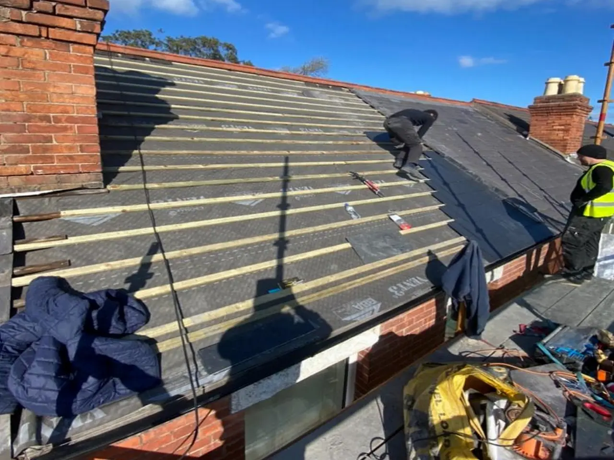
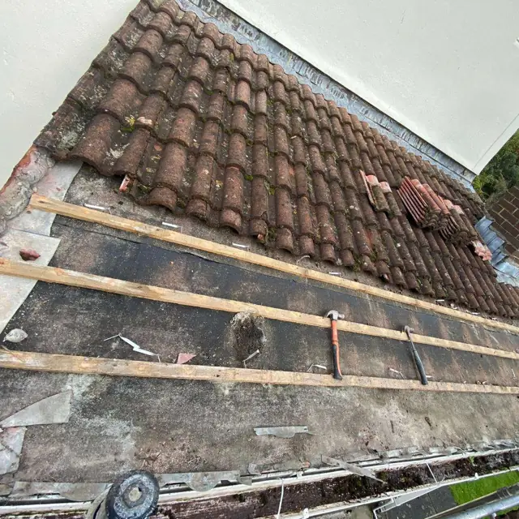
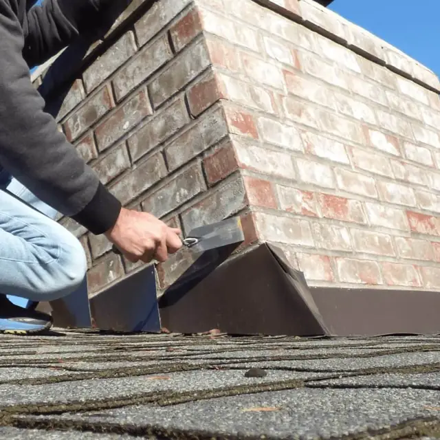
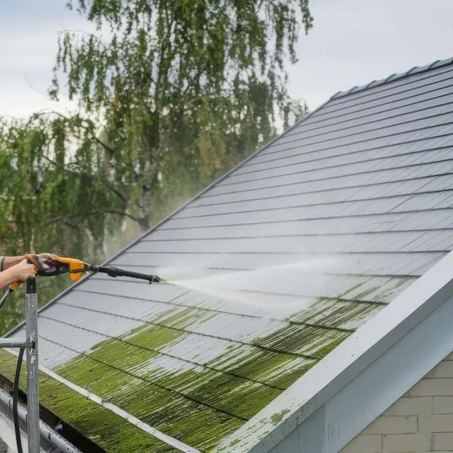

Roof repairs in Malahide.
Local roof repairs in Malahide. Leaks, slates, flat roofs and full new roofs. Free quotes, fair prices and no job too small.
- Free, no-obligation quote
- Clear price, no hidden fees
- No job too small
- Guaranteed work
Prefer to talk? 085 173 8320
Malahide
Your local team in Malahide.
We work on homes and businesses in Malahide and the surrounding areas, so we are never far away. Every job starts with a look at the problem and a clear, no-obligation quote.
Whether you are in the heart of Dublin City or anywhere across the county, we are your local roofing specialists: expert repairs, replacements and maintenance, with fast, friendly and affordable service.
 Serving Malahide
Serving MalahideWhat we do in Malahide
Roofing work we carry out.
A full range of roofing work for homeowners and businesses across Dublin City and the surrounding areas.

Roof Repairs
From a few slipped slates to storm damage, repaired properly and promptly.
View service
Emergency Roof Repairs
Storm damage, missing slates or water coming in? We respond quickly.
View service
New Roof Installation
Re-roofing and new roofs built with strong, long-lasting materials.
View service
Fibreglass Roofing
Seamless GRP roofs for extensions, dormers, garages and sheds.
View service
Flat Roof Repairs
Felt, EPDM rubber and fibreglass flat roofs, repaired or replaced.
View service
Tile & Slate Roofing
Installation, restoration and careful repair of slate and tiled roofs.
View service
Chimney Repairs
Flashing, repointing and brickwork to keep chimneys safe and dry.
View service
Dry Verge Systems
Mortar-free verge caps that protect roof edges from wind and rain.
View service
Dry Ridge Systems
Mechanically fixed ridge tiles that stay put in a storm.
View service
Roof Cleaning
Moss, algae and lichen removed, and kept away for longer.
View serviceWhat our customers say
Trusted by Dublin homeowners.
Had a great experience with Patrick & the guys at fast roof repairs dublin, had a persistent leaking roof for the last 10 months, Patrick came identified the problem very quickly & gave us a very reasonable quote. Everything was done perfectly and as promised, everything was left clean as if they were never here. Highly reccomend. 8 weeks now. Tried and tested with recent storm. 0 leaks. 5 stars
100/10. Honest, hardworking & reliable. Me and my partner were really impressed with the whole process of the guys replacing our flat roof, Patrick is really easy to work with and you can tell he knows his stuff. Guys did a great job on the roof and cleaned up afterwards really well
After a storm blew some of our roof tiles off, rain started coming in and we were worried about damage to the house. We contacted Fast Roof Repairs Dublin and they were great to deal with. They came out quickly and had everything fixed the same day, which was a huge relief! The lads did a brilliant job, explained everything clearly and took the time to make sure the repair was done properly. Really happy with the service and would definitely call them again if we ever have any more roofing problems. Thanks again for the great work!
From start to finish the lads were great! We had a new flat roof installed on our home in dublin 8, really clean and polite team, would reccomend
Call Patrick only yesterday morning about a gutter leak, they came out today. Fix the leak and clean all the gutters for a very reasonable price. Highly recommend.
Thanks Patrick and team done a full re roof for our home in Dublin 8, highly recommend
Nearby
We also cover.
We cover Dublin City and the whole of County Dublin, including:
Are your quotes free?
Yes. Quotes are free and there is no obligation to go ahead.
Is any job too small?
No. We are happy to take on small repairs as well as full new roofs.
What areas do you cover?
Dublin City and the whole of County Dublin, including Swords, Malahide, Howth, Blanchardstown, Lucan, Tallaght, Dalkey and Dún Laoghaire.
Do you work on commercial properties?
Yes. We work for homeowners and businesses.
Should I repair or replace my roof?
We inspect the roof and explain plainly what needs doing. We only recommend a replacement when a repair will not do the job.
Do you do emergency repairs?
Yes. Emergency and storm damage repairs are part of our roof repair service. Ring 085 173 8320.
Free quotes · No job too small
Need roofing work done?
Need a repair, a replacement, or just have a few questions? Whether it is a minor leak or a full new roof, we are here to help.